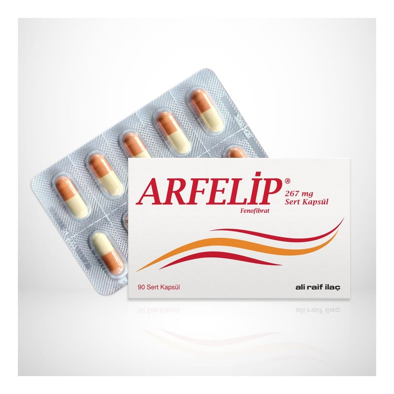

Arfelip 267 mg Sert Kapsül, 90 adet

Ne için kullanılır
KT · Bölüm 1ARFELİP®, beyaz-beyazımsı toz içeren portakal-fildişi renkli no:0 sert jelatin kapsüldür. Ambalajında 30 ve 90 sert kapsül içermektedir. ARFELİP®yaygın olarak 'fibratlar' olarak bilinen bir ilaç grubuna aittir. Bu ilaçlar kandaki yağ (lipid) düzeylerini düşürmek için kullanılır. Trigliserid diye bilinen yağlar buna örnektir. ARFELİP®kandaki yağ seviyesini düşürmek için, düşük yağlı bir diyet ve egzersiz, kilo verme gibi tıbbi olmayan başka uygulamalar ile beraber kullanılır. ARFELİP®statin adı verilen ilaçlarla tek başına kan yağ düzeyinin kontrol edilemediği durumlarda bu ilaçlara ek olarak da kullanılabilir. ARFELİP®sıklıkla HDL (yüksek yoğunluklu lipoprotein) adı verilen ‘iyi’ kolesterol düzeyini de arttırır. ARFELİP®tedavisi sırasında düşük yağlı diyeti sürdürmek önemlidir.